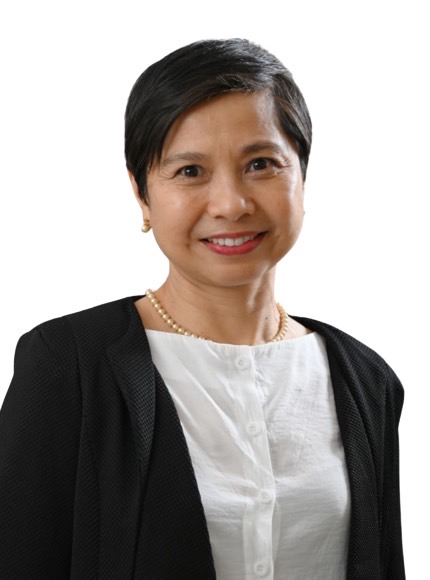

Associate Professor (Practice)
NTUpreneur · MAE · NTU Singapore · Mar 2023 – present

Human Center · HCSREL · NTU
Associate Professor in Entrepreneurship (Practice)
NTU Entrepreneurship Academy (NTUpreneur) · School of Mechanical & Aerospace Engineering · Nanyang Technological University, Singapore
Ecosystem builder at the intersection of emerging technology, circular economy, and purpose-driven entrepreneurship — bridging government, industry, and academia for more than 28 years.
Summary
Dr. Lerwen Liu is Associate Professor in Entrepreneurship (Practice) at Nanyang Technological University, with appointments in the NTU Entrepreneurship Academy and the School of Mechanical & Aerospace Engineering. At NTU she founded the Human Centred Sustainability Research & Education Lab (HCSREL) — an accelerator for the green economy transition, built as a knowledge and education hub, a digital sandbox, and a space for multi-stakeholder entrepreneurial practice.
She is a resource person in technopreneurship and circular economy for the Asian Development Bank and a technical consultant to United Nations agencies (UNEP, UNDP). Public biographies on STEAM Platform, NTU, and the Asia Pacific Circular Economy Roundtable describe the same through-line: more than two decades of global business development in emerging technologies, used to connect policy, industry, and youth leadership toward a digital and green transformation.
Her teaching and research focus on purpose-driven entrepreneurship education — authentic local and global cases, systems thinking, and an ecosystem that brings human and artificial intelligence together through data entrepreneurship. She is Editor-in-Chief of Springer Nature’s live reference work Handbook of Circular Economy and Sustainability Global Leadership, and co-editor of the textbook An Introduction to Circular Economy (Springer Nature, 2020), which received Springer Nature’s China Development Award in 2021.
Now
NTUpreneur · MAE · NTU Singapore · Mar 2023 – present
Human Centred Sustainability Research & Education Lab
STEAM Platform — youth leadership for a smart circular economy
Asian Development Bank (2015–) · United Nations UNEP / UNDP (2017–)
Handbook of Circular Economy & Sustainability Global Leadership, Springer Nature
Asia Pacific member, 2025 – 2027
Path
Policy & practice
Writing
Education
Teaching
Purpose-driven entrepreneurship education with authentic local and global content. The pedagogy is built around empathy, systems thinking, sustainability, and business knowledge — so students practise solving real problems, not only studying them.
Research now focuses on an ecosystem that integrates human and artificial intelligence through data entrepreneurship, to accelerate the shift toward sustainability and a circular economy.
Connect
For collaborations, speaking, and lab partnerships, reach her on LinkedIn or through HCSREL.